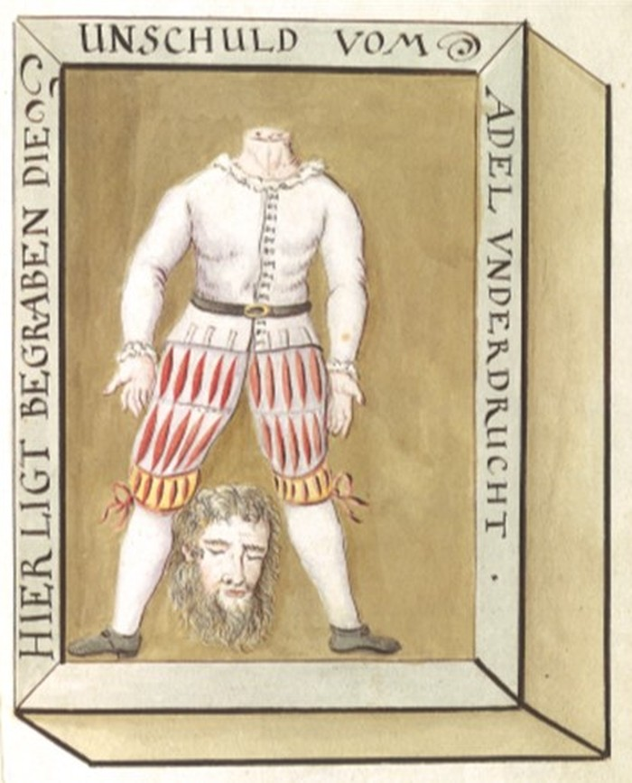

Waldmanns Grab
Was gibt es hier zu sehen?
Im linken Querschiff des Fraumünsters befindet sich die Steinplatte von Hans Waldmanns Grab und daneben jene seiner Frau Anna Landolt.[1]
Organisatorischer Hinweis
Der Eintritt in die Fraumünsterkirche ist kostenpflichtig und an Öffnungzeiten gebunden. → Webseite Fraumünster
Rehabilitationsversuch und Tilgung von Geschichte
Hans Waldmanns mächtiger Grabstein im Fraumünster bezeugt, dass der Bürgermeister nach seiner Hinrichtung ein ‹würdiges› Grab an ‹würdiger› Ruhestätte erhalten hat, wie er es sich anlässlich der Urteilsverkündung gewünscht haben soll (→ Wellenberg / Schifflände).[2] Der Grabstein wurde möglicherweise erst einige Zeit nach 1489 von Waldmanns Stiefsohn Gerold Edlibach errichtet, passend zum Grabstein seiner 1496 verstorbenen Mutter Anna Landolt, verwitwete Edlibach und Waldmann.
Gleichzeitig weist Waldmanns Grabstein auf die bewegte Historiografie seiner Geschichte hin. Die Steinplatte zeigt nämlich einen Rehabilitierungsversuch:
Inschrift auf dem Grabstein
UF DEN 6. TAG ABRELL 1489 IST [GERICHT] HANS WALDMAN
«Wir haben hier in Zürich ein sehr schönes Beispiel für einen Versuch, geschichtliche Tatsachen aus dem kollektiven Gedächtnis zu löschen. […] Die Inschrift [auf Hans Waldmanns Grabplatte im Fraumünster] wurde Ende 18. Jahrhundert manipuliert, indem das Wort ‹Gericht›, das auf seine Hinrichtung und damit auf seine Schuld verweist, weggemeisselt wurde. Wahrscheinlich steckt die Zunft Kämbel dahinter, die das Ansehen ihres Ahnherrn reinwaschen wollte. So versucht jede Zeit, ihr Bild von einer historischen Persönlichkeit durchzusetzen – und das geschieht eben vorzugsweise dadurch, dass man gewisse Aspekte aus dem Gedächtnis tilgt.»[3]
Waldmanns Grabplatte im Fraumünster.
Auffindung von Waldmanns Grab und Leichnam im 17. Jahrhundert
In den 1620er Jahren wurde der Schulbub Bartholome Anhorn zufällig Zeuge einer Graböffnung im Fraumünster. Die ‹Gruselgeschichte› dieses Ereignisses hat Anhorn Jahre später aufgeschrieben:
Copia eines Schreibens H. Bartholome Anhornen / betreffend einen gefundenen unverwesnen Lychnam, / so dem vermuthen nach, deß H. Burgermr. / Waldmanns solle gewesen seyn[4]
Als Ich zu Zürich studierte, und anno 1626 und folgender Jahren, by H. Johanne Wasero, Professore Logico in Collegio Humanitatis am tisch war, welcher dazumahl [...] in Gaßen wohnte, besuchte ihne, meinen Tischherren auff eine Zeit Hr. N. Keller, damahlen Pfarrer zu Seuzach, [...] als es nun bald ein uhren, befahl mir mein tischherr in das Collegium Humanitatis zu gehen, und den studenten zu sagen, sie sollen heimgehen, er könne dießmahl nit die Lection halten. Ich bate den Hr. um den Schlüßel zum Fraumünster, damit ich nit um den Kornhaußplaz gehen müßte, welchen er mir willig gegeben: In dem ich die Kirchenthür aufgeschloßen, macht Marx Rollenbuz der Sygrist ein grab in der gegen zwüschen des H. Pfarrers stuhl und der Canzel, doch nächer gegen der Canzel alß gegen dem stuhl, für den damahls verstorbnen H. Hoffmeister, Amtmann zum Fraumünster [...] in dem ich in die Kirchen kommen, öfnete grad in selbigem augenblik der sigrist einen angetrofnen todtenbaum [= Sarg], in deme ein frischer enthaupteter todten cörper und der Kopf zwüschen den beinen gelegen, der halß am Körper und Kopf ware ganz frisch und Blutig, als wan das haubt allernechst were abgeschlagen worden, der Sigrist und ich erschraken sehr darab, der Sigerist wolte den todtenbaum // straks wider zu machen, mit Erden bedeken und darneben graben. Ich bat ihn Er solle nur ein wenig still halten, ich wolts meinem tischherren sagen, [...] luffe deswegen ylend in das Collegium under die thür, sagte den studiosis mein Tischhr. komme nit gen lesen, eilete wider durch den +gang und die Kirchen meinem Hr. zu, und erzellte Ihme was Ich gesehen; der ließe Hr. Keller by seiner Haußfr. sizen, gieng mit mir in die kirchen, blib by dem Sigerist in der verschloßnen Kirchen, gab mir den Kirchenschlüßel, und schikte mich zu Hr. Breitinger, ihme solches anzuzeigen, der kam mit mir, eilte in die Kirchen, ich schloße mit dem Schlüßel auf, und machte auß seinem befehl straks wider zu: So bald Er den leib gesehen, schikte Er mich zu Hr. Burgermeister Heinrich Holzhalben hinter Zeuhnen, mit befehl, ihme solches allein anzuzeigen, mit vermelden, wann es Ihr weißheit gefällig, bette Hr. Breitinger, er solle hinkommen, den Leichnam besehen, und einen Rathschluß faßen, was zu thun seyn werde; der Hr. Burgermeister kam alsobald, der Stadtknecht, der mitgieng, mußte vor der Kirchenthür bleiben, ich schloß auf, und nach dem der Hr. Burgermeister hineingegangen, widerum zu, diese 3 Hr., Hr. Burgermeister, Hr. Oberst Pfarher, und mein Tischherr, stuhnden by dem grab, besahen den Cörper eigentlich, rührten denselben auch an; der Sigerist und ich stuhnden hinder ihnen, sie redten zimmlich lang etwas leis mit einander, daß ich, wie ich immer meine ohren spizte, nicht alles verstehen können, doch so viel vernommen, daß sie von Burgermeister geredt, der ein gewaltiger man gewesen, in einem auflauff enthaubtet, und zum Fraumünster begraben worden; Endtlich befehlen sie dem Sigrist, den Tekel wider über den Todtenbaum zu thun, und das grab zu zumachen, [...] und dem Hr. Amtm. Hofmeister sl. sein grab an ein ander ort machen: [...] dem Sigristen haben Hr. Burgermr. und Hr. Oberst Pfarrer, by gefangenschafft, verlurst seines diensts, u. noch größrer straf verbotten, dieses niemand zu offenbahren, sonder by sich allein zuhalten; mir in gleichen haben sie gedreuet, wann ich einigem menschen nur das geringste darvon sage, müßte ich in der schul vor allen knaben also geschwungen werden, daß mir das blut aller orthen ablauffe, und werde keine gunst noch gnad nimmermehr haben, hab auch solches keinem menschen gesagt, außert meinem vatter und großvatter, welche mir gleichfalls zugesprochen, solches zu verschweigen, weil es mir so hoch verbotten worden, [...] was die 3 Hr. damahls geurtheilt, hab ich nit hören, vilweniger als ein knab von 11 oder 12 Jahren recht faßen können: Jedoch so vil vermerkt, daß sie diesre unverwesenheit, und frische blutrünstigkeit, für ein zeichen seiner unschuld gehalten, glaubten, daß Er nun fürohin bald verwesen werde, sagten auch, wann diese geschicht offenbar würde, gebe es ein großes zulauffen, vil fürnehme Hr. würden diesen leichnamm sehen wollen, darauß möchte große ungelegenheit entstehen, und vilerley widerwertige urtheil von den alten und den gegenwertigen zeiten gefellt werden; seye // also das beste, die sach genzlich zu verschweigen, still halten, und den frommen Burgermeister Waldman ruhen laßen. [...]
Den 1. Januarii 1684 — Bartholome Anhorn, alter / pfarrer zu Ellsau

Zusammen mit dem Quellentext ist die Darstellung des Waldmanngrabs mit einer politischen Deutung seiner Hinrichtung überliefert, Erhard Dürsteler: Stemmatologia, Zentralbibliothek Zürich, Ms E 24, fol. 44r.
Anmerkungen
- [↑] Dörner: Kirche (1996), S. 155.
- [↑] Stadtzürcherischer Bericht, vgl. Gagliardi: Dokumente II (1913), S. 444, Nr. 43.
- [↑] Scholz; Schwedler: Geschichtliches Erinnern (2010); Baer; Baer: Zürcher Altstadtkirchen (2019), S. 98.
- [↑] Nach Dürsteler, Zentralbiliothek Zürich, Ms E 24. Transkription: Rainer Walter. – Vgl. auch Gagliardi: Dokumente II (1913), S. 319ff.